컴퓨터응용가공산업기사 (2011-06-12 기출문제)
1과목: 기계가공법 및 안전관리
1. 연삭숫돌의 연삭조건과 입도(grain size)의 관계를 옳게 표시한 것은?
- 연하고 연성이 있는 재료의 연삭 : 고운입도
- 다듬질 연삭 또는 공구의 연삭 : 고운입도
- 경도가 높고 메진 일감의 연삭 : 거친입도
- 숫돌과 일감의 접촉면이 작을 때 : 거친입도
(정답률: 64%)

2. 테이블이 수평면 내에서 회전하는 것으로 공구의 길이방향 이송이 수직으로 되어 있고 대형 중량물을 깎는데 쓰이는 선반은?
- 수직선반
- 크랭크축선반
- 공구선반
- 모방선반
(정답률: 85%)
3. 주요 공작기계의 일반적인 일감 운동에 대한 설명으로 틀린 것은?
- 밀링머신 : 일감을 고정하여 이송한다.
- 선반 : 일감을 고정하여 회전시킨다.
- 보링머신 : 일감을 고정하고 이송한다.
- 드릴링머신 : 일감을 고정하고 회전시킨다.
(정답률: 80%)
4. 밀링머신에서 커터 지름이 120mm, 한 날 당 이송이 0.1mm, 커터 날수가 4날, 회전수가 900rpm 일 때 절삭속도는 약 몇 m/min 인가?(오류 신고가 접수된 문제입니다. 반드시 정답과 해설을 확인하시기 바랍니다.)
- 33.9 m/min
- 113 m/min
- 214 m/min
- 339 m/min
(정답률: 65%)
5. 밀링머신에서 주축의 회전운동을 직선 왕복운동으로 변화시키고 바이트를 사용하는 부속장치는?
- 수직밀링 장치
- 슬로팅 장치
- 래크절삭 장치
- 회전 테이블 장치
(정답률: 75%)
6. 재질이 W, Cr, V, Co 등을 주성분으로 하는 바이트는?
- 합금공구강 바이트
- 고속도강 바이트
- 초경합금 바이트
- 세라믹바이트
(정답률: 72%)
7. 창성법에 의한 기어 절삭에 사용하는 공구가 아닌 것은?
- 래크커터
- 호브
- 피니언 커터
- 브로치
(정답률: 77%)
8. 수공구에 의한 재해의 원인 중 옳지 않은 것은?
- 사용법이 올바르지 못했다.
- 사용하는 공구를 잘못 선정했다.
- 사용전의 점검, 손질이 충분했다.
- 공구의 성능을 충분히 알고 있지 못했다.
(정답률: 85%)
9. 고속회전 및 정밀한 이송기구를 갖추고 있으며, 정밀도가 높고 표면 거칠기가 우수한 실린더, 커넥팅 로드, 베어링면 등의 가공에 가장 적합한 보링 머신은?
- 수직 보링 머신
- 정밀 보링 머신
- 보통 보링 머신
- 코어 보링 머신
(정답률: 83%)
10. 각도, 가공, 드릴의 홈가공, 기어의 치형가공, 나선가공을 할수 있는 공작 기계는 어느 것인가?
- 선반(Lathe)
- 보링 머신(Boring Machine)
- 브로칭 머신(Broaching Machine)
- 밀링머신(Milling Machine)
(정답률: 51%)
11. 어떤 도면에서 편심량을 4mm로 주어졌을 때, 실제 다이얼 게이지의 눈금의 변위량은 얼마로 나타나야하는가?
- 2mm
- 4mm
- 8mm
- 0.5mm
(정답률: 66%)
12. 선반에 의한 절삭 가공에서 이송(feed)과 관계가 없는 것은?
- 단위는 회전당 이송(mm/rev)으로 나타낸다.
- 일감의 매 회전마다 바이트가 이동되는 거리를 의미한다.
- 이론적으로는 이송이 작을수록 표면 거칠기가 좋아진다.
- 바이트로 일감 표면으로부터 절삭해 들어가는 깊이를 말한다.
(정답률: 68%)
13. 기계의 안전장치에 속하지 않는 것은?
- 리미트 스위치(limit switch)
- 방책(防柵)
- 초음파 센서
- 헬멧(helmet)
(정답률: 88%)
14. 외부 컴퓨터에서 작성한 NC 프로그램을 CNC 공작기계에 송·수신하면서 가공하는 방식은?
- NC
- CNC
- DNC
- FMS
(정답률: 64%)
15. 공작기계에서 절삭을 위한 세 가지 기본운동에 속하지 않는 것은?
- 절삭운동
- 이송운동
- 회전운동
- 위치조정운동
(정답률: 64%)
16. 평면연삭기에서 연삭숫돌의 원주 속도 v =2500m/min이고, 연삭저항 F = 150 N이며 연삭기에 공급된 연삭동력이 10kW일 때 연삭기의 효율은 약 얼마인가?
- 53 %
- 63 %
- 73 %
- 83 %
(정답률: 44%)
17. 다음 중 KS B 0161에 규정된 표면거칠기 표시 방법이 아닌것은?
- 최대 높이(Ry)
- 10점 평균 거칠기(Rz)
- 산술 평균 거칠기(Ra)
- 제곱 평균 거칠기(Rrms)
(정답률: 77%)
18. 직경(외경)을 측정하기에 부적합한 공구는?
- 철자
- 그루브 마이크로미터
- 버니어 캘리퍼스
- 지시 마이크로미터
(정답률: 75%)
19. 녹색 탄화규소 연삭숫돌을 표시하는 것은?
- A 숫돌
- GC 숫돌
- WA 숫돌
- F 숫돌
(정답률: 78%)
20. 호닝가공의 특징이 아닌 것은?
- 발열이 크고 경제적안 정밀가공이 가능하다.
- 전 가공에서 발생한 진직도, 진원도, 테이퍼 등을 수정 할수 있다.
- 표면 거칠기를 좋게 할 수 있다.
- 정밀한 치수로 가공할 수 있다.
(정답률: 62%)
2과목: 기계설계 및 기계재료
21. 다음 중 장신구, 무기, 불상, 종 등의 금속제품으로 오래 전부터 사영해 왔으며 내식성과 내마모성이 좋아 각종 기계주물용이나 미술 공예품으로 사용되는 금속은?
- 철
- 청동
- 납
- 알루미늄
(정답률: 84%)
22. 담금질된 강의 경도를 증가시키고 시효변형을 방지하기 위한 목적으로 0℃ 이하의 온도에서 처리하는 방법은?
- 저온 담금 용해처리
- 시효 담금처리
- 냉각뜨임처리
- 심냉처리
(정답률: 81%)
23. 다음 금속 중 자기변태점이 없는 것은?
- Fe
- Ni
- Co
- Zn
(정답률: 59%)
24. 다음 중 친화력이 큰 성분 금속이 화학적으로 결합하여, 다른 성질을 가지는 독립된 화합물을 만드는 것은?
- 금속간 화합물
- 고용체
- 공정 합금
- 동소 변태
(정답률: 75%)
25. 다음 원소 중 중금속이 아닌 것은?
- Fe
- Ni
- Mg
- Cr
(정답률: 75%)
26. 다음 중 기계구조용 탄소강 SM45C의 탄소 함유량으로 가장 적당한 것은?
- 0.02 ~ 2.01 %
- 0.04 ~ 0.⑤ %
- 0.32 ~ 0.38 %
- 0.42 ~ 0.48 %
(정답률: 71%)
27. 알루미늄 합금으로 피스톤 재료에 사용되는 Y-합금의 성분을 바르게 표현한 것은?
- Al - Cu - Ni - Mg
- Al - Mg - Fe
- Al - Cu - Mo - Mn
- Al - Si - Mn - Mg
(정답률: 82%)
28. 열처리방법 중 풀림의 목적이 아닌 것은?
- 기계 가공성 개선
- 냉간 가공성 향상
- 잔류 응력 제거
- 재질의 경화
(정답률: 61%)
29. 다음 중 표준상태인 탄소강의 기계적 성질은 일반적으로 탄소함유량에 따라 변화한다. 가장 적합한 것은?(단, 표준상태인 탄소강은 0.86%C이하의 아공 석강이다.)
- 탄소강이 증가함에 따라 인장강도가 증가한다.
- 탄소강이 증가함에 따라 항복점이 저하된다.
- 탄소강이 증가함에 따라 연신율이 증가한다.
- 탄소강이 증가함에 따라 경도가 감소한다.
(정답률: 62%)
30. 다음 중 탄소강에 함유되어 있는 규소(Si)의 영향을 잘못 설명한 것은?
- 인장간도, 탄성한계, 경도를 상승시킨다.
- 연신율과 충격값을 증가시킨다.
- 결정립을 조대화 시키고 가공성을 해친다.
- 용접성을 저하시킨다.
(정답률: 37%)
31. 피치가 1mm인 2줄 나사에서 90°회전시키면 나사가 움직인 거리는 몇 mm인가?
- 4
- 2
- 1
- 0.5
(정답률: 63%)
32. 940N·m의 토크를 전달하는 지름 50mm인 축에 안전하게 사용할 키의 최소 길이는 약 몇 mm 인가? (단, 묻힘 키의 폭과 높이 b×h = 12mm×8mm 이고, 키의 허용 전단응력은 78.4 N/mm2)
- 40
- 50
- 60
- 70
(정답률: 33%)
33. 기계요소를 사용목적에 따라 분류할 때 완충(진동억제)또는 제동용 기계요소가 아닌 것은?
- 브레이크
- 스프링
- 베어링
- 플라이휠
(정답률: 57%)
34. 외접원통 마찰차에서 원동차의 지름 200mm, 회전수 1000rpm으로 회전할 때, 2.21kW의 동력을 전달시키려면 약 몇 N의 힘으로 밀어 붙어야 하는가? (단, 마찰계수는 0.2로 한다.)
- 1⑤5.20
- 708.86
- 2110.50
- 1417.72
(정답률: 30%)
35. 다음 중 두 축의 상대위치가 평행할 때 사용되는 기어는?
- 베벨 기어
- 나사 기어
- 웜과 웜기어
- 헤리컬 기어
(정답률: 53%)
36. 다음 중 정숙하고 원활한 운전과 고속회전이 필요할 때 적당한 체인은?
- 사일런스 체인(silent chain)
- 코일 체인(coil chain)
- 룰러 체인(roller chain)
- 블록 체인(block chain)
(정답률: 80%)
37. 볼베어링의 수명에 대한 설명으로 맞는 것은?
- 반지름방향 동등가하중의 3배에 비례한다.
- 반지름방향 동등가하중의 3승에 비례한다.
- 반지름방향 동등가하중의 3배에 반비례한다.
- 반지름방향 동등가하중의 3승에 반비례한다.
(정답률: 59%)
38. 안지름 500mm, 최고사용압력 120N/cm2 의 보일러의 강판의 두께는 약 몇 mm 정도가 적당한가? (단, 강판의 인장강도 350MPa, 안전율 4.75 리벳이음의 효율 = 0.58로 하며, 부식여유는 1mm로 한다.)
- 4.12
- 6.⑤
- 13.76
- 8.02
(정답률: 22%)
39. 브레이크 드럼축에 554.27 N·m의 토크가 작용하고 있을 때, 이 축을 정지시키는데 필요한 제동력은 약몇 N인가? (단, 브레이크 드럼의 지름은 500mm이다.)
- 1108.54
- 2217.08
- 252.26
- 504.52
(정답률: 40%)
40. 핀 전체가 두 갈래로 되어있어 너트의 풀림 방지나 핀이 빠져나오지 않게 하는데 사용되는 핀은?
- 테이퍼 핀
- 너클 핀
- 분할 핀
- 평행 핀
(정답률: 75%)
3과목: 컴퓨터응용가공
41. 곡면형상을 구성하는 가장 작은 단위의 형상요소를 패치(patch)라고 한다. 이러한 패치의 종류에 해당하지 않는 것은?
- Coon's patch
- scatch patch
- ruled patch
- sweep patch
(정답률: 53%)
42. Bezier 곡선에 대한 설명으로 틀린 것은?
- 조정 다각형(control polygon)의 시작점과 끝점을 반드시 통과한다.
- 조정 다각형의 첫 번째 선분은 시작점에서의 접선벡터와 같은 방향이다.
- 조정점의 개수가 증가하면 곡선의 개수도 증가한다.
- 곡선의 형상을 국부적으로 수정하는 것이 가능하다.
(정답률: 64%)
43. 다음 중 사용자가 형상 구속조건과 치수조건을 이용하여 형상을 모델링하는 방식은?
- primitive 기반 모델링
- parametric 모델링
- boundary 모델링
- featture 모델링
(정답률: 73%)
44. 다음 중 도면 및 형상자료를 서로 다른 CAD/CAM 시스템에서 호환하여 사용할 수 있도록 정의된 표준체가 아닌 것은?
- GKS
- STEP
- IGES
- DXF
(정답률: 62%)
45. 다음은 x축으로 3배, y축으로 2배 확대하기 위한 이차원동차 변환 행렬이다. s=1 일 때 적당하지 않은 것은?
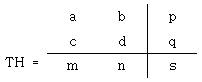
- a = 3
- b = 2
- c = 0
- d = 2
(정답률: 61%)
46. 컴퓨터를 이용한 공정계획의 약자로 맞는 것은?
- CAP
- CAPP
- MRP
- CAT
(정답률: 69%)
47. 형상모델링 방법 중 솔리드 모델링(Solidmodeling)의 특징이 잘못 설명된 것은?
- 은선의 제거가 가능하다.
- 단면도 작성이 어렵다.
- 불리언 작업(Boolean Operration)에 의하여 복잡한 형상도 표현할 수 있다.
- 명암, 컬러 기능 및 회전, 이동하여 사용자가 명확히 물체를 파악할 수 있다.
(정답률: 73%)
48. Rapid Prototyping(RP)공정에서 CAD 모델은 STL파일 형식을 사용하여 표현된다. STL 파일 형식에 대한 다음 설명중 옳은 것은?
- 물체를 삼각형들의 리스트로 표현한다.
- 자유곡면 표현을 위해 Bezier 곡면식을 기본적으로 지원한다.
- 솔리드 물체에 대한 위상정보를 저장하고 있다.
- CAD 모델을 STL 파일 형식으로 변환시 같은 종류의 곡선형식을 사용하므로 오차가 발생하지 않는다.
(정답률: 45%)
49. 생성된 NC 데이터를 CNC공작기계에 입력하는 방법이 아닌것은?
- RS-232C를 이용하는 방법
- 데이터 서버를 이용하는 방법
- CL 데이터를 이용하는 방법
- DNC 운전에 의한 방법
(정답률: 39%)
50. 다음 중 곡면 모델에 대한 설명으로 틀린 것은?
- 은선 제거가 가능하다.
- 단면도를 작성할 수 있다.
- NC가공정보를 얻을 수 있다.
- 물리적 성질(부피, 관성모멘트 등)을 계산하기 쉽다.
(정답률: 77%)
51. 솔리드 모델링에 대한 설명으로 틀린 것은?
- 솔리드 모델링은 형상을 절단하여 단면도로 작성하기는 어렵지만 물리적 성질의 계산이 가능하다.
- CSG(Constructive Solid Geometry)는 단순한 형상의 조합으로 생성하는데 불리언 연산자를 사용한다.
- B-rep(Boundary representation)은 형상을 구성하고 있는 정점, 면, 모서리의 관계에 따라 표현하는 방법이다.
- 솔리드 모델링은 셀 혹은 기본곡면 등의 입체 요소조합으로 쉽게 표현할 수 있다.
(정답률: 66%)
52. 다음 중 뷰포트(viewport)에 관한 설명으로 틀린 것은?
- 화면상에 물체를 표현하기 위해서는 적절한 좌표변환이 필요하다.
- 일반적으로 그리고자 하는 도형이 놓여 있는 영역을 뷰포트라고 한다.
- 뷰포트는 CRT 상의 영역을 의미한다.
- 도형을 화면상에 표현하기 위해서 뷰포트 중심점의 좌표, 축척 등이 사용되기도 한다.
(정답률: 38%)
53. 다음 중 일반적으로 5축 가공이 적용되는 제품과 가장 거리가 먼 것은?
- 터빈 블레이드(turbine blade)
- 선박의 스크루(screw)
- 타이어 모델
- 나사 축
(정답률: 74%)
54. 절점(knots)의 개수가 9 이고 차수(degree)가 4인 임의의 B-스플라인 곡선의 조정점(control point)의 개수는 몇 개인가?
- 3
- 4
- 5
- 6
(정답률: 54%)
55. CRT 모니터와 비교한 LCD 모니터의 장점으로 틀린 것은?
- 작고 가볍다.
- 전자파 발생량이 적다.
- 소비 전력이 적다.
- 시야각이 매우 넓다.
(정답률: 75%)
56. 다음은 컴퓨터(computer)의 기본 구성을 표로 나타낸 것이다. 빈칸에 들어갈 내용은?
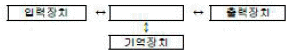
- ALU
- SAM
- DAM
- CPU
(정답률: 86%)
57. 3차원 변환에서 점 P(x, y, z, 1)을 Z축을 기준으로 임의의 각도만큼 회전한 경우 변환행렬 T는? (단, 반시계 방향으로 회전한 각이 양의 각이고 P =P·T 이다.)
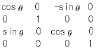
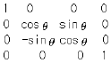
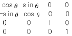
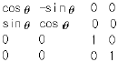
(정답률: 56%)
58. 3차원 솔리드 모델 중 프리미티브(primitive) 형상이라고 할수 없는 것은?
- 원뿔
- 직선
- 구
- 육면체
(정답률: 78%)
59. 방정식 ax+by+c=0 이라는 식으로 표현 가능한 것은?
- 포물선
- 타원
- 직선
- 원
(정답률: 60%)
60. 중심(-10, 5) 반지름 5인 원의 방정식은?
- (x-10)2+ (y+5)2= 5
- (x+10)2+ (y-5)2= 5
- (x-10)2+ (y+5)2= 25
- (x+10)2+ (y-5)2= 25
(정답률: 54%)
4과목: 기계제도 및 CNC공작법
61. 베어링 기호 608 C2 P6에서 C2가 뜻하는 것은?
- 등급 기호
- 계열 기호
- 안지름 번호
- 내부 틈새 기호
(정답률: 43%)
62. 좌2줄 M50×3-6H 의 나사기호 해독으로 올바른 것은?
- 리드가 3mm
- 수나사 등급 6H
- 왼쪽 감김방향 2줄나사
- 나사산의 수가 3개
(정답률: 67%)
63. 도면에서 표면의 줄무늬 방향 지시 그림 기호 M은 무엇을 뜻하는가?
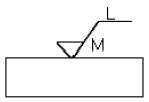
- 가공에 의한 커터의 줄무늬 방향이 기호를 기입한 그림의 투영면에 비스듬하게 두 방향으로 교차
- 가공에 의한 커터의 줄무늬가 기호를 기입한 면의 중심에 대하여 거의 동심원 모양
- 가공에 의한 커터의 줄무늬가 기호를 기입한 면의 중심에 대하여 거의 방사 모양
- 가공에 의한 커터의 줄무늬가 여러 방향으로 교차 또는 무방향
(정답률: 75%)
64. 스케치의 일반적인 방법으로 척도에 관계없이 적당한 크기로 부품을 그린 후 치수를 측정하여 기입하는 스케치 방법은?
- 프린트 스케치법
- 본뜨기 스케치법
- 프리핸드 스케치법
- 사진촬영 스케치법
(정답률: 78%)
65. 도면에서 치수와 같이 사용하는 치수 보조 기호가 아닌것은?
- □
- t
- SR
- △
(정답률: 74%)
66. 구멍과 축이 끼워맞춤 상태에 있을 때 기준치수와 각각의 치수허용차의 기호 기입이 옳은 것은?
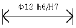
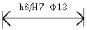
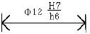
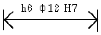
(정답률: 57%)
67. 맞물리는 한 쌍의 스퍼기어에서 축에 직각 방향으로 단면 도시할 때 물려있는 잇봉우리원을 표시하는 선으로 맞는 것은?
- 양쪽 다 굵은 실선
- 양쪽 다 굵은 파선
- 한 쪽은 굵은 실선, 다른 쪽은 파선
- 한 쪽은 굵은 실선, 다른 쪽은 굵은 일점쇄선
(정답률: 52%)
68. 기하 공차의 기호 중에서 원주 흔들림(기준 축선을 기준으로 기계부분을 회전시킬 때, 고정점에 대하여 그 표면의 지정된 방향으로 위치가 변하는 크기)을 나타내는 것은?
- ◎
- ⌖
- ⌓
- ↗
(정답률: 76%)
69. KS 기계재료에서 SF 340 A 는 어떤 재료를 나타내는가?
- 탄소강 단강품
- 가단주철
- 합금 공구강재
- 니켈-동 합금 주물
(정답률: 47%)
70. 기계 구조용 탄고 강재를 나타내는 재료기호 “SM45C”에서 탄소 함유량을 나타내는 것은?
- S
- M
- 45C
- SM
(정답률: 88%)
71. CNC 프로그램 작성에서 데이터에 소수점의 사용이 가능한 주소로 바르게 구성된 것은?
- X, Y, Z, A, B, C, I, J, K, R
- X, Y, Z, U, V, W, F, S, T, M
- U, V, W, I, J, K, N, G, P, Q
- I, J, K, P, Q, U, X, Y, Z
(정답률: 65%)
72. 커플링으로 연결된 CNC 공작기계의 볼 스크루 피치가 12mm 이고, 서보모터의 회전각도가 240˚ 일 때 테이블의 이동량은?
- 2mm
- 4mm
- 8mm
- 12mm
(정답률: 60%)
73. 다음 그림의 P1에서 P2로 절대 명령으로 원호가공하는 머시닝센터 프로그램으로 올바른 것은?
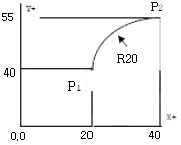
- G90 G02 X40.0 Y55.0 R20. ;
- G90 G02 X20.0 Y15.0 R20. ;
- G91 G03 X20.0 Y15.0 R20. ;
- G91 G03 X40.0 Y55.0 R20. ;
(정답률: 73%)
74. 다음은 ISO 선삭용 인서트 규격이다. 여기서 T의 의미는?
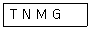
- 여유각
- 공차
- 인선 높이
- 인서트 형상
(정답률: 78%)
75. 그림과 같이 모터 축으로부터 위치 검출을 행하여 볼 스크루 회전 각도를 검출하는 방법을 사용하는CNC 서보기구는?
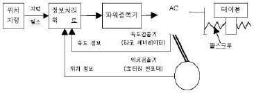
- 개방회로 방식
- 반폐쇄회로 방식
- 폐쇄회로 방식
- 반개방회로 방식
(정답률: 79%)
76. 머시닝센터에서 이송속도 F(mm/min)를 나타내는식은? (단, f:날당 이송(mm/tooth), Z:날 수, N:회전수(rpm))
- F = fN/Z
- F = f·Z·N
- F = fN2/Z
- F = 2·f·Z·N
(정답률: 82%)
77. CNC선반 가공에서 100rpm으로 회전하는 스핀들에서 5회전 dwell을 프로그래밍 하려고 한다. 다음 중( ) 안에 맞는 것은 어느 것인가?
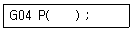
- 1.5
- 150
- 300
- 3000
(정답률: 55%)
78. CNC 프로그램에서 좌표치를 지령하는 방식이 아닌 것은?
- 절대지령 방식
- 기계원점지령 방식
- 증분지령 방식
- 혼합지령 방식
(정답률: 71%)
79. 머시닝센터 작업할 때 안전사항으로 틀린 것은?
- 절삭가공 중 기계 정면에 위치한다.
- 기계작동 중에는 항상 장갑을 끼고 작업한다.
- 이상시 기계를 정지시키고 점검을 한다.
- 일상점검 후 작업을 한다.
(정답률: 85%)
80. CNC 방전가공의 방전 진행과정으로 옳은 것은?
- 스파크방전→코로나방전→글로우방전→아크방전
- 코로나방전→스파크방전→아크방전→글로우방전
- 스파크방전→글로우방전→코로나방전→아크방전
- 코로나방전→스파크방전→글로우방전→아크방전
(정답률: 43%)